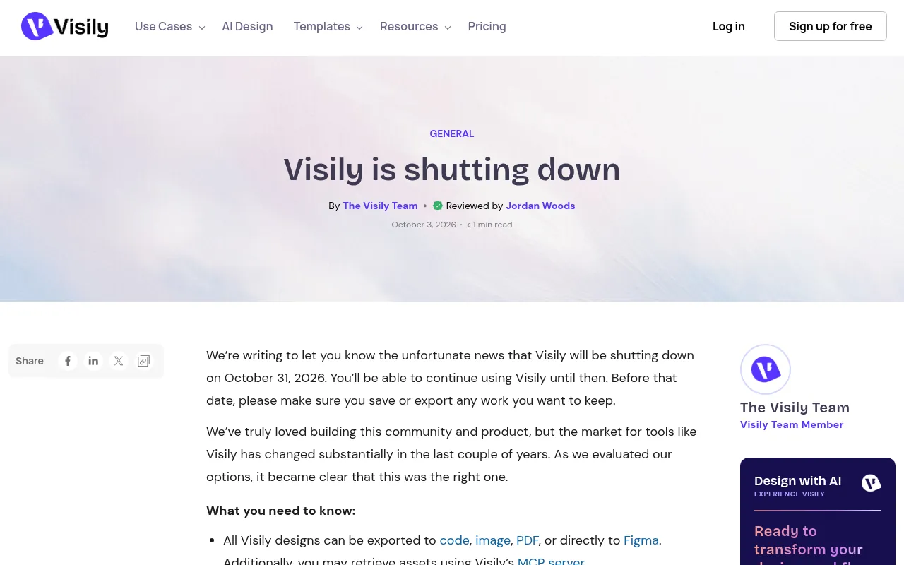
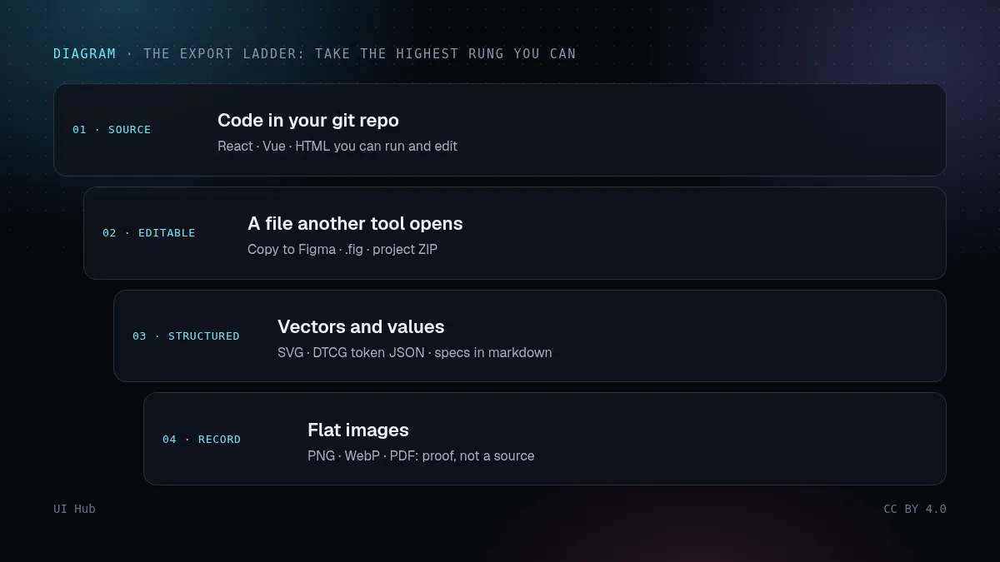
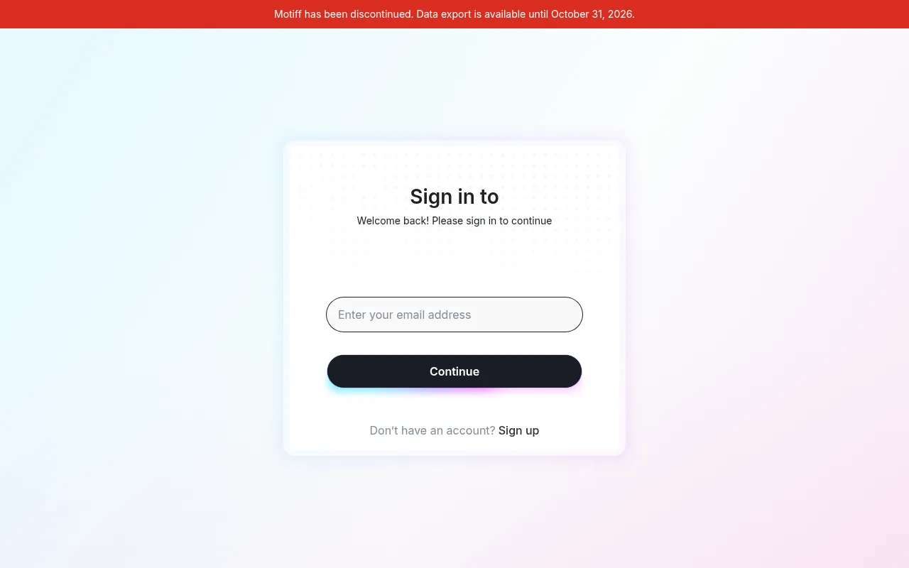

昨天，2026 年 10 月 31 日，是两款 AI 设计工具一个不太起眼的截止日。Motiff，一款对标 Figma、后来转向 AI 界面生成的编辑器，关闭了最后的导出窗口：服务本身已于 6 月 23 日下线，Motiff 表示 10 月 31 日之后剩余数据全部删除。Visily，一款 AI 线框图工具，同一天关停，并表示数据将于 11 月 30 日永久删除。单看每件事都不算大新闻，放在一起却是个有用的提醒：云端设计工具里的文件，往往是你作品唯一的一份；而这类工具的市场正在快速变化。

Visily 博客 2026 年 10 月 3 日公告：服务于 2026 年 10 月 31 日关闭，数据于 11 月 30 日删除 · 截图：Visily（www.visily.ai），2026-11-01 截取，版权归原站所有
发生了什么
- Motiff。2026 年 4 月 24 日宣布关停，同时停止新注册和续费。编辑器 6 月 23 日下线，导出一直开放到 10 月 31 日，并且所有导出选项都改为免费：PNG、JPEG、WebP、PDF、复制到 Figma、HTML 代码、React 代码和项目 ZIP。motiff.com 首页现在挂着「已停止服务」的横幅，旧编辑器只剩一个导出页面。
- Visily。10 月 3 日宣布，团队写道「像 Visily 这样的工具，市场在过去几年里发生了很大变化」。设计可以导出为图片、PDF、代码（付费方案支持 React、Vue 或 HTML，每个 ZIP 最多 10 个页面），或通过插件导入 Figma，素材还可以通过 Visily 的 MCP 服务器取出。免费方案的图片导出只有 1 倍尺寸。
- 没有开放格式。Brilliant 的迁移指南指出，Motiff 从未公开过有文档的文件格式，所以事后没有一个文件可以交给转换器。唯一的出路就是在截止日前导出。

导出阶梯示意：从最有用到最不有用依次是仓库里的代码、其他工具能打开的设计文件、SVG 与 Token JSON 等结构化文件、作为存档的图片和 PDF · 示意图：UI Hub 原创，CC BY 4.0
为什么这种事会反复发生
生成一个页面已经很便宜，而大平台正在把它打包进来。过去一个月里，Figma、Canva、Framer 和 GitHub 都推出了能在你现有设计系统里工作的智能体或原型工具。这挤压了那些主打「一句提示做出一个页面」的独立工具。Figma 这周的说法很能说明问题：它引用的一项韩国调查中，62% 的受访者说 AI 产出要改六到十轮才能上线，而它给出的答案是一个读取团队设计上下文的智能体。换句话说，价值已经从生成的像素转移到背后的决定：Token、组件、规格说明，以及每个页面为什么这样做。这些决定如果只存在于某个厂商的画布里，正是最先丢掉的东西。
我们的看法
把每一款 AI 设计工具，包括大平台，都当成工作「发生」的地方，而不是作品「存放」的地方。真正的源头应该放在你自己掌控的格式里：代码放在你的仓库，Token 用开放的 DTCG JSON 格式（首个稳定版 2025.10 已被 Figma、Penpot、Sketch、Framer、Tokens Studio 等支持），规格和需求说明用普通 Markdown。这样一来，工具关停、涨价或转型，代价是一个周末的迁移，而不是你的整个存档。检验方法很简单：如果这个工具明天消失，你能不能只靠自己硬盘上的东西，重建最重要的三个页面？如果诚实的回答是不能，先把这件事解决，再在里面设计别的。
导出阶梯
导出时，拿工具提供的最高一级，也把低几级一起拿上。能运行的代码胜过其他工具能打开的设计文件；两者都胜过 SVG、Token JSON 这类结构化文件；而这些又胜过图片和 PDF，它们忠实记录了设计，但无法编辑。图片仍然值得保留，按页面和日期命名，作为当时达成一致的凭证。
清单：任何 AI 设计工具的退出计划
- 第一天就找到导出页面。团队正式采用之前，把一个真实页面按所有可选格式各导出一次，并在别的工具里打开。
- 弄清哪些导出要付费。在 Visily，代码和 Figma 导出需要付费方案，免费图片只有 1 倍。要知道降级后会失去什么。
- Token 放在工具之外。颜色、字体、间距和圆角应该放在 git 里的 DTCG JSON 文件中，由工具导入，而不是反过来。
- 生成的代码马上进 git。下载文件夹里的 ZIP 不是源头。
- 把需求说明写下来。每个关键页面的提示词、约束和选择这个方向的理由，存成和代码放在一起的 Markdown 文件。
- 定期导出。每月一次，用能拿到的最完整格式，存到团队自己的存储里。批量限制（Visily 每个 ZIP 最多 10 个页面）意味着大画板比你预想的更花时间。
- 字体和素材自己保管。代码导出常常丢掉自定义字体和授权图片；原文件和授权要单独保存。
- 优先选有 MCP 服务器或 API 的工具。Visily 的 MCP 服务器让智能体多了一条取出素材的路。可编程访问就是一扇出口。
- 留意预警信号。续费暂停、首页突然主推另一个产品，或者出现一篇标题叫「你需要知道的事」的帮助文章。
- 如果刚错过截止日，今天就去问。Visily 说数据在 11 月 30 日删除，并留了 support@visily.ai 作为咨询邮箱；它没有说 10 月 31 日之后还能不能导出，所以现在就问，不要想当然。
design-exit.md（退出计划）
工具： <名称> · 方案：<档位> · 负责人：<姓名>
源头： tokens/*.json（DTCG）· src/（代码）· specs/*.md
导出： 每月 · 代码 ZIP + Figma 副本 + PNG @2x
上次测试： 2026-11-01 · 在 <其他工具> 中打开：正常
若关停： 全部导出 · 迁移 Token · 重建前三个页面

2026 年 11 月 1 日的 motiff.com：红色横幅写着 Motiff 已停止服务、数据导出截止 2026 年 10 月 31 日，下方是登录框 · 截图：Motiff（motiff.com），2026-11-01 截取，版权归原站所有UI Hub 能帮什么
把数值从工具里带出来，先要给它们起名字：给智能体的设计 Token 讲了怎么把 Token 写成智能体和工具都能共用的形式。Figma 代码图层与 Specs 和 GitHub Replica 展示了大平台正在把代码和书面上下文当作共同的源头。如果你在挑替代工具，可以从提示生成界面工具对比开始，UI Hub 的工具页面也列出了每款工具能导出什么。